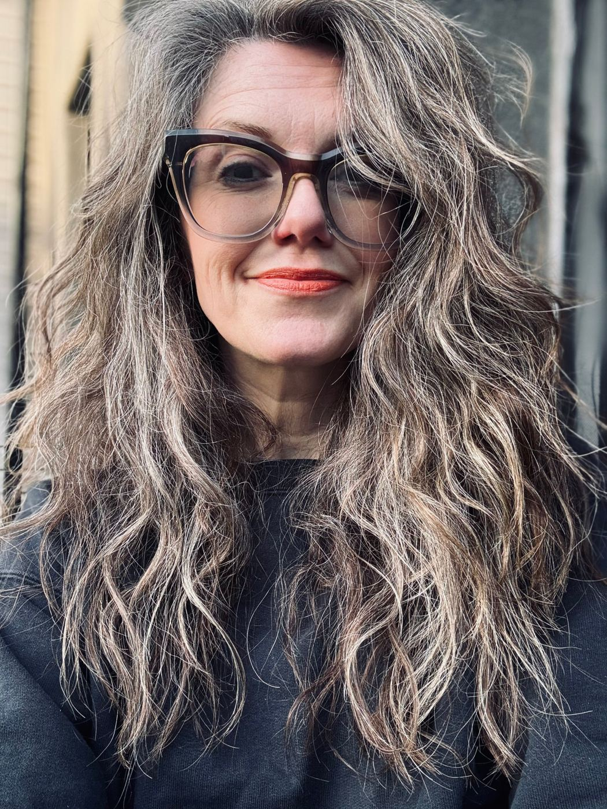
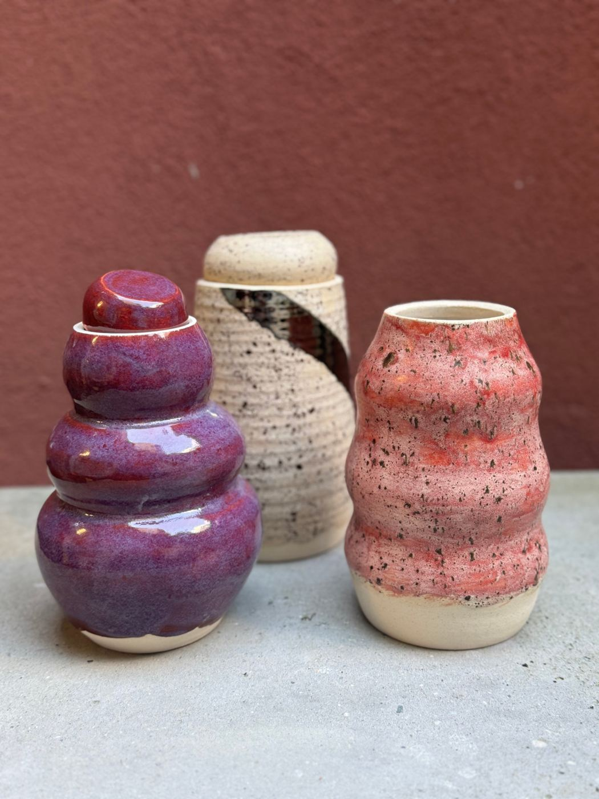
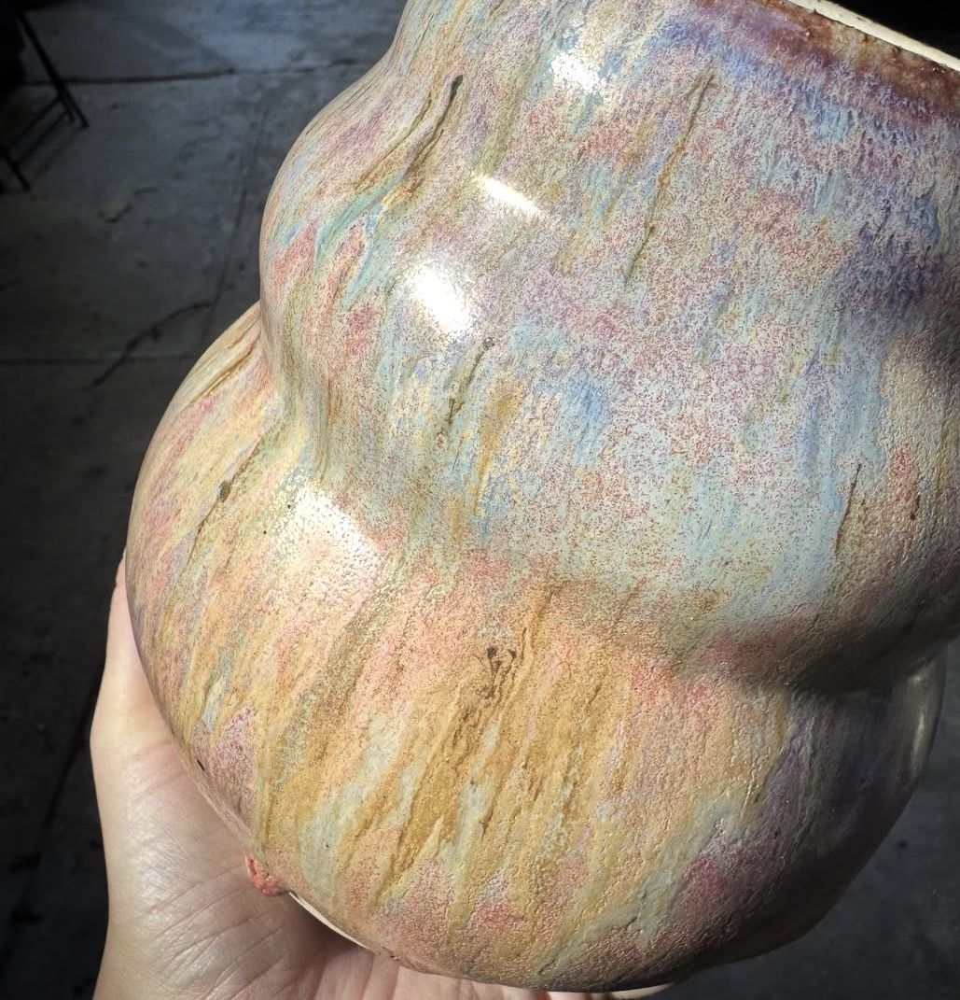
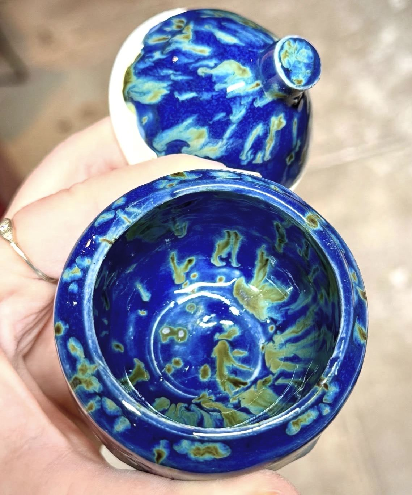

Open infrastructure · sustainability · ceramics
Kaitlin Thaney
I work on the funding and long-term care of open infrastructure. I also make pots.
Executive Director of Invest in Open Infrastructure. Twenty years helping the open knowledge, data and code we share get funded, governed well and built to last.

01 — Work
Making open infrastructure durable.
Research runs on shared, open systems that are chronically underfunded. My work is changing how institutions and funders pay for them — and building the coalitions, endowments and programs that keep them going.
Focus
Sustainability & funding
Endowments, investment strategy and funding models for shared infrastructure.
Focus
Governance & boards
Steering nonprofits through growth, mergers and leadership transitions.
Focus
Program design
Fellowships, grants and leadership programs that grow healthy open communities.
Selected work
Invest in Open Infrastructure
Executive Director · 2020–present
Inaugural executive leader of the nonprofit helping funders, institutions and providers invest in the open infrastructure research and scholarship depend on — through research, Infra Finder and funding pilots.
Wikimedia Foundation
Director, Endowment · 2017–2020
Helped launch and scale the first endowment for the open movement, raising $60M to sustain Wikipedia in perpetuity.
Mozilla Foundation
Director, Science → Director, Leadership Network · 2013–2017
Founded the Mozilla Science Lab, then led a team of ~30 and a $10M+ portfolio across science, learning, advocacy and web literacy, including the Open Leadership Training Series.
Digital Science
Partnerships & public engagement · Employee #7 · 2010–2013
One of the first employees at Nature Publishing Group's software spinout. Led partnerships, business development and public engagement as the company's face in the research community, and ran the Catalyst grants for early-stage research software.
Creative Commons
Program Lead, Science · 2006–2010
Led Science Commons — groundwork for open access, data sharing and CC0, and the first principles for open science.
Boards & advisory: Internet Archive Europe (advisory board) · data.org Advisory Council · LYRASIS · Code for Science & Society (chair) · Open Collective Foundation · DuraSpace · DataKind UK (founding director) · UK e-Infrastructure Leadership Council.
Newsletter · on LinkedIn
The Open Stack
Notes on the funding, governance and politics of the infrastructure underneath open research — and what it takes to keep it standing.
- The open scholarship ecosystem faces collapse; it's also our best hopeLSE Impact Blog · 2020
- How open science helps researchers succeedeLife · 2016
- Science Commons: Building the Research WebThe Digital Public Domain · Open Book Publishers
02 — Speaking
Selected talks.
Keynotes and briefings for policymakers, funders, libraries and open source communities — from the UN to OSCON.
Highlights
- Internet Archive Switzerland × UNESCOWith UNESCONov 2026
- Sage AssemblySage BionetworksOct 2026
- Open @ UN General AssemblyUN General Assembly week · New YorkSep 2026
- Software Heritage at UNESCOWith Software Heritage2024
- UNESCO Open Science Working GroupMaking open infrastructure the default in research2022
- RLUK — keynoteThe need for open infrastructure2022
- OSCON — keynoteThe mudslide hypothesis of science2012
- SciPy — keynoteThe reality of digital science2011
- Chinese Academy of Sciences — keynoteSharing scientific data: legal, normative and social issues2009
Also: Library Publishing Forum, WOLFCon, NISO+, OASPA, European Committee on Open Science, Royal Institution, Strata, the Sustain podcast and more.
03 — Clay Thaney
Pots, mostly.
The other half of my week happens in the studio: hand-built platters, thrown bowls and glazes that move in the kiln. your words
04 — Held & Keeping
Custom urns, made by hand.
I started making urns for my own family. Now I make them for others: full-size urns to display, and smaller lidded jars for the people who'd like a part close by at home.



Held · full-size urns, thrown or hand-built, glazed to suit the person.
Keeping · small jars, often made as a set so each family member can keep one.
05 — Get in touch
Good reasons to write.
01
Speaking
Keynotes, panels and closed-door briefings on funding and sustaining open infrastructure.
02
Boards & advisory
Governance roles with mission-driven orgs at an inflection point.
03
Press & podcasts
Open science, open source sustainability, research funding.
04
Studio
Collections, commissions and custom memorial urns.
Contact
Email
hello@kaythaney.comLinkedIn
in/kaythaneyNewsletter
The Open StackCeramics
@claythaney